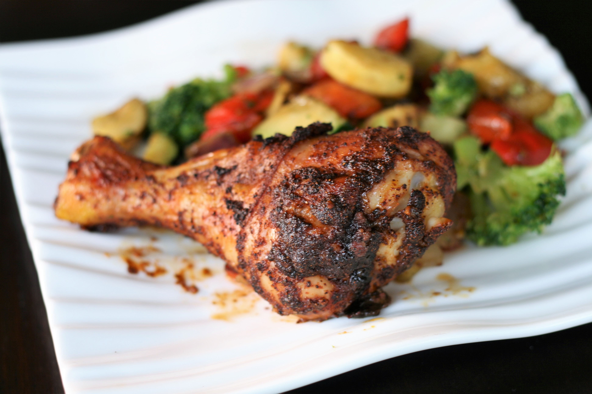

Old Fashioned Potato Salad

Description
Ingredients
- 5 potatoes
- 3 eggs
- 1 cup chopped celery
- ½ chopped onion
- ½ sweet pickle relish
- ¼ mayonnaise
- 1 tablespoon prepared mustard
- ¼ teaspoon garlic salt
- ¼ teaspoon celery salt
- ground black pepper to taste
Steps
- Bring a large pot of salted water to a boil. Add potatoes and cook until tender but still firm, about 15
minutes. Drain, cool, peel and chop.
- While potatoes cook, place eggs in a saucepan and cover with cold water. Bring water to a boil; cover, remove
from heat, and let eggs stand in hot water for 10 to 12 minutes. Remove from hot water, cool, peel and chop.
- Combine the potatoes, eggs, celery, onion, relish, mayonnaise, mustard, garlic salt, celery salt, and pepper
in
a large bowl. Mix together well and refrigerate until chilled.
Crispy Baked Chicken Legs

Description
Ingredients
- 4 pounds chicken legs
- 2 tablespoons chili powder
- 1 tablespoon garlic powder
- 1 teaspoon cayenne pepper
- 1 teaspoon Himalayan pink salt
- 2 tablespoons tamari
Steps
- Preheat the oven to 375 degrees F (190 degrees C).
- Place chicken legs in a large bowl. Spread chili powder, garlic powder, cayenne, and salt onto the chicken;
pour
sauce over top. Mix thoroughly and transfer to a baking sheet.
- Bake, uncovered, in the preheated oven until chicken is no longer pink at the bone and the juices run clear,
45
to 50 minutes. An instant-read thermometer inserted near the bone should read 165 degrees F (74 degrees C).